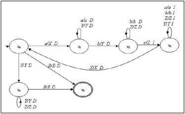

------------------------------------------------------------------------------------
Máquina de Turing No Determinínistica

Las máquinas de Turing que hemos visto se llaman también determinísticas.
Existe otro tipo de máquinas más generales llamadas no determinísticas.
La diferencia fundamental es que puede haber varias cuádruplas comenzando por la misma pareja de símbolo estado. De esta forma ante una configuración inicial pueden existir distintos cálculos posibles. No existe una única línea de cálculo. Dada una configuración la máquina puede evolucionar a distintas configuraciones.
Análogamente a las máquinas determinísticas, diremos que una configuración
... sj ...
↓
qi
es terminal si y sólo si no existe ninguna cuádrupla que comience por qisj. Cuando alcanza una configuración terminal, la máquina se dice que para.
Usaremos el símbolo |- entre un par de configuraciones para indicar que se puede pasar de una a otra mediante una cuádrupla (un paso de cálculo)
TEOREMA
Para todo lenguaje L recursivamente enumerable existe una máquina de Turing M no determinística que acepta el lenguaje L.
La propiedad inversa es también cierta. Todo lenguaje aceptado por una máquina de Turing no determinística será también r.e. . Por la tesis de Church-Turing esto debería ser cierto. Sólo es necesario simular una máquina no determinística M para una entrada u, siguiendo todas las alternativas en cada paso, y dando un valor (por ejemplo 0) si se alcanza una configuración terminal en una de las posibles ramas. Esto define una función que es intuitivamente parcialmente calculable y cuyo dominio es el lenguaje aceptado por M.